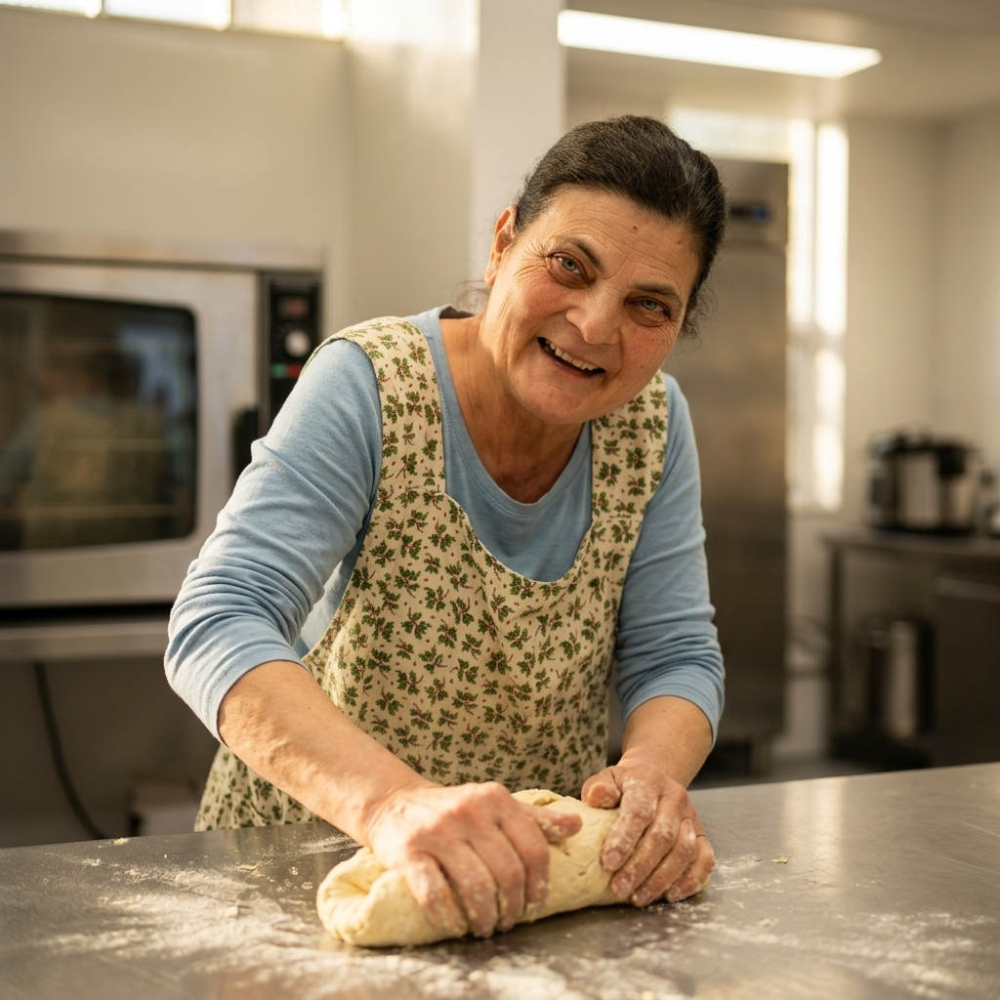

Anna's Easy Bread
A wonderful rhythmic, tactile recipe for kneading warm dough at your own pace.

What You Need (Ingredients & Tools)
Step-by-Step Visual Guide
Step 1: Wash Hands & Clear Space
Wash and dry your hands and clear a clean space on your worktop.
Step 2: Stir Dry Ingredients
Put the bread flour, salt, and dried yeast into a large mixing bowl and stir them together with a spoon.
Step 3: Pour in Warm Water & Olive Oil
Pour the warm water and olive oil into the bowl. Stir with a wooden spoon until it comes together into a soft dough.
Step 4: Knead the Dough
Press, fold, and stretch the dough on a lightly floured surface for 8–10 minutes until smooth and elastic.
Step 5: Rest & Rise
Place the dough back in the bowl, cover with a clean tea towel, and rest in a warm spot for 1 hour until doubled in size.
Step 6: Shape Your Loaf
Gently press the air out of the dough, shape it into a smooth round loaf or rolls, and place on a baking tray.
Step 7: Bake with an Adult
Ask an adult to bake at 220°C (200°C fan) for 25–30 minutes until golden brown and hollow when tapped underneath.